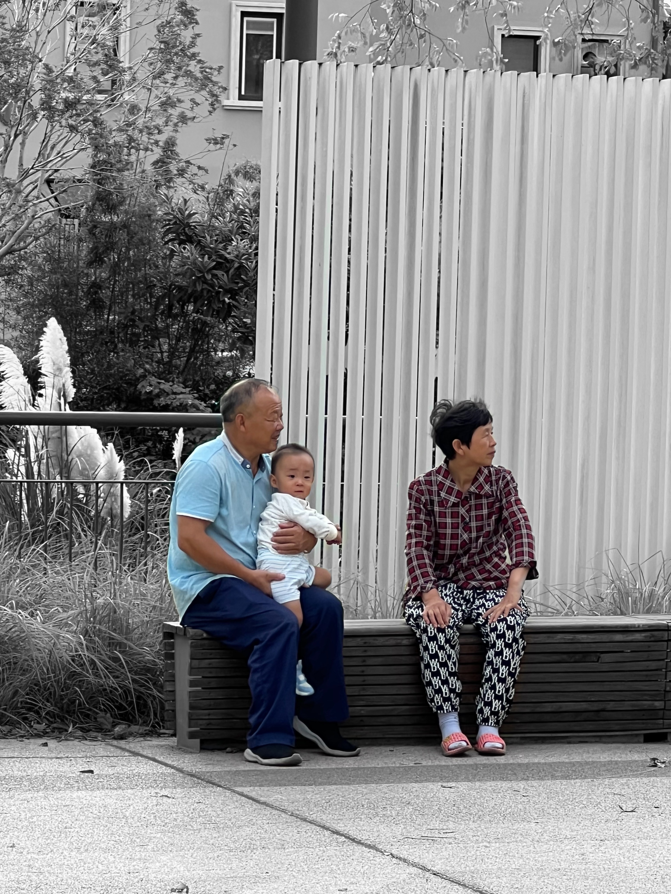

Title: Grandparental Love
Creator: Yiyang Zhang
Introduction: Although these scenes were not all taken, most of the guardians who picked up and dropped off their children at the gate of the kindergarten were elderly, and many elderly people were accompanying and waiting beside the venue where children learned roller skating. At present, most families in China's cities are dual-income families. Due to the lack of sufficient time of the young, the elderly shoulder the important responsibility of bringing up the next generation.